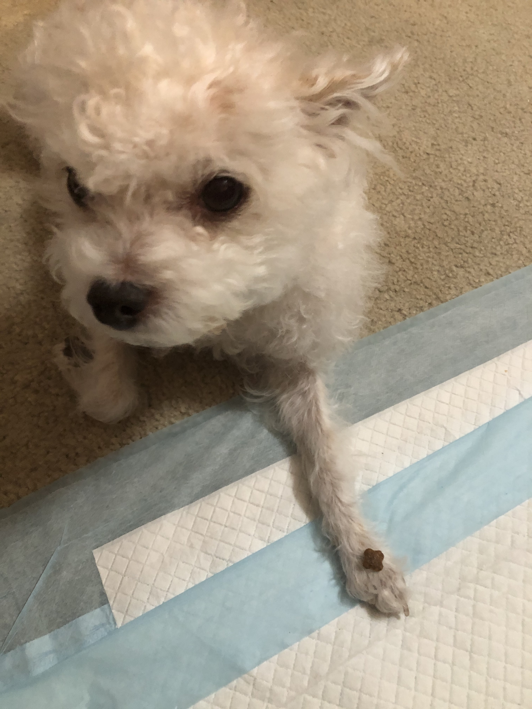

Hello, I'm not really sure what to write here. I already have a Loren Ipsum homepage and it seemed boring to do another. Justin if you're seeing this hi! I promise my next homework assignments will have some more creative spice- I'm currently getting used to the fast pace of this bootcamp more than anything else.
As a recent college graduate, I am working on this website (along with other such projects) to hopefully develop my way into a technical job. Frankly, I just wanted to take the time to learn something outside of my major. I'm hoping that whoever reads this or even visits this page in particular has a great day! Here is a picture of my wonderful dog Sky:
